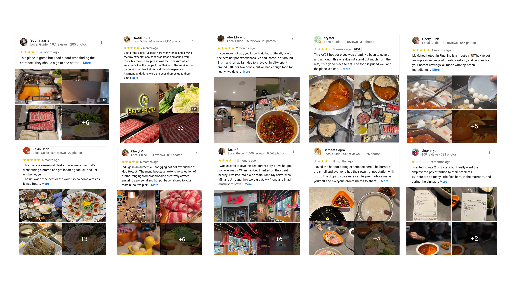
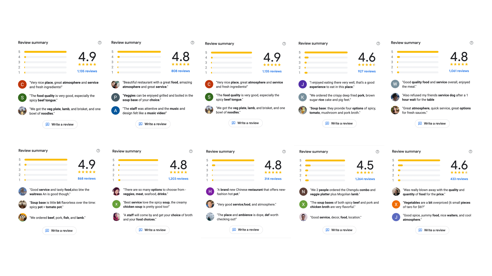
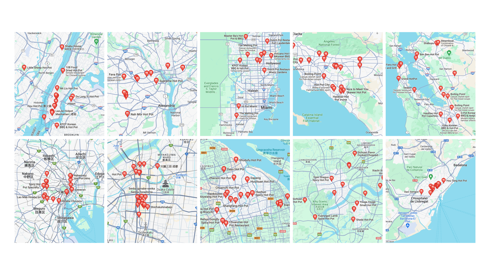
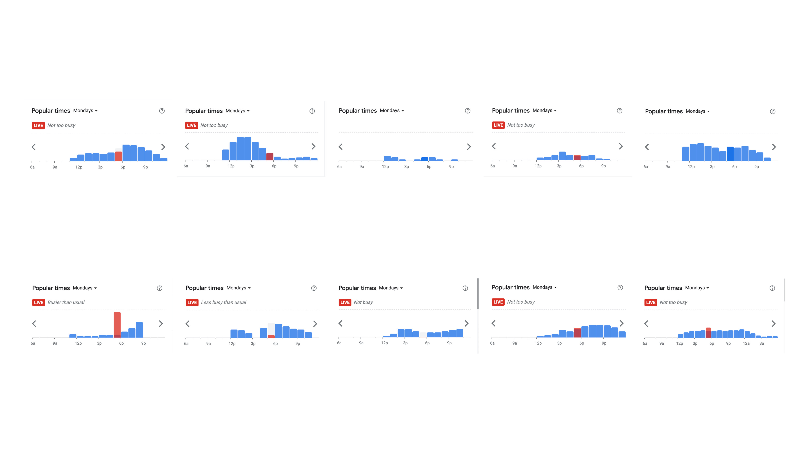
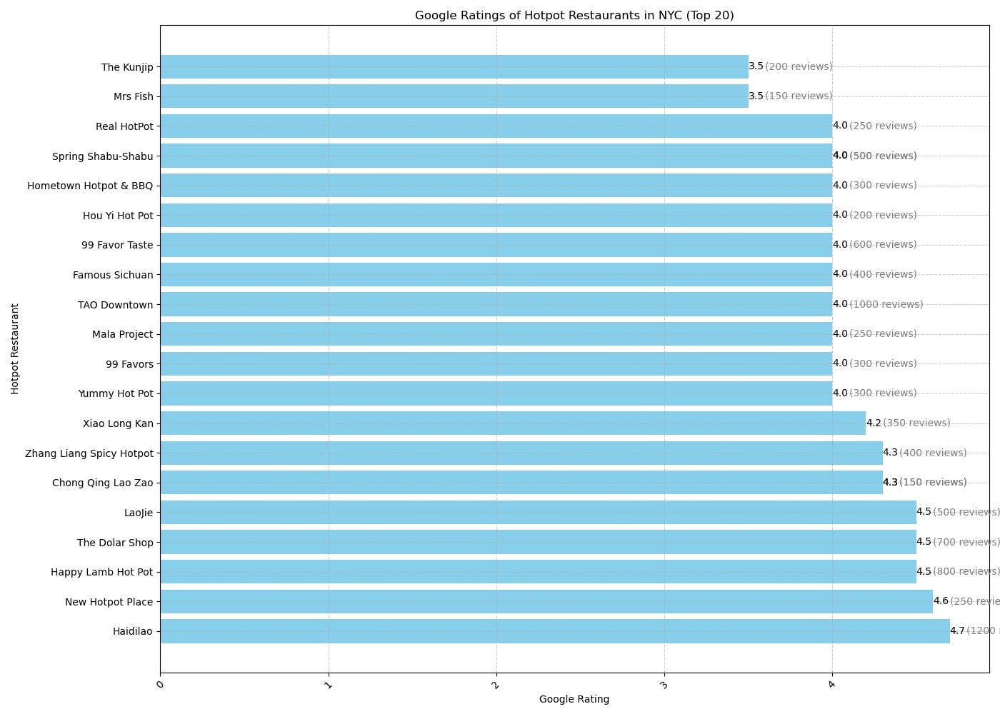
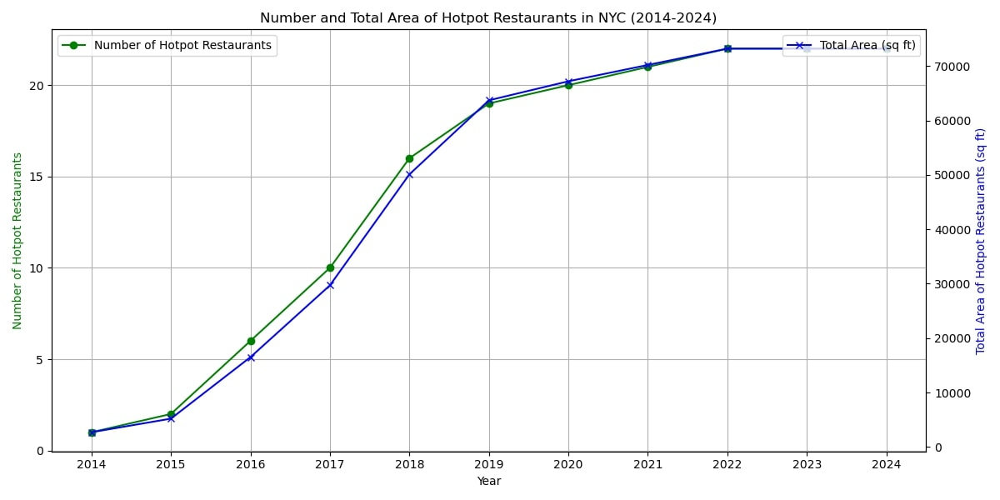
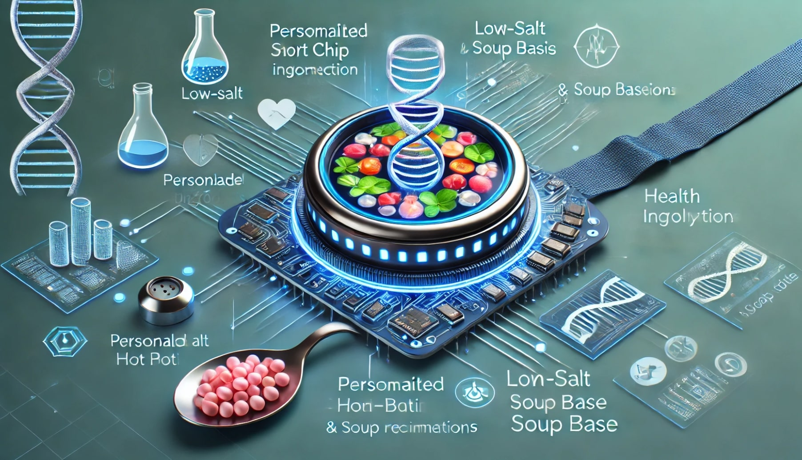

Chen Feng
Table of Contents
1 – Systems

2 – Authorship


3 – Politics
Menu data:
Contains menu information and pictures of various hot pot restaurants. Menu data reveals the dishes and prices of different hot pot restaurants, verifying the hypothesis that customer satisfaction can be improved by optimizing menu design and pricing strategies. Menu data is relatively easy to obtain because most restaurants will make their menus public to attract customers. This data can usually be obtained through online platforms or field surveys.
Customer evaluation data:
Contains customers’ specific evaluation and feedback on hot pot restaurants. Customer evaluation data reveals customers’ specific satisfaction and dissatisfaction with hot pot restaurants, verifying the assumption that customer satisfaction can be improved by improving service quality and meeting customer needs. The data may be biased, and customers may be more likely to give negative reviews if they are dissatisfied.
Rating data:
Contains user ratings for hot pot restaurants. Rating data reveals user satisfaction and dissatisfaction with hot pot restaurants, and improves user satisfaction by improving service quality and customer experience. Rating data is usually obtained through user evaluation platforms or direct feedback. The rating standards and user base of different platforms may affect the representativeness and accuracy of the data.
Geographic location data:
Contains the specific locations of hot pot restaurants in different cities. These data reveal the geographical distribution of hot pot restaurants and verify the hypothesis that service efficiency can be improved by optimizing the distribution network and expanding coverage. Location data is usually public information and can be easily obtained through map services.
Busy time data:
Describes the peak hours of each hotpot restaurant during the day. These data reveal the peak hours of each hotpot restaurant, verify the necessity of delivery time optimization, and support the hypothesis of improving service efficiency by dispersing order peaks.
Google Ratings of Hotpot Restaurants in NYC (Top 20):
This bar chart ranks the top 20 hotpot restaurants in NYC based on their Google ratings. Each bar represents a restaurant, showing its rating and the total number of reviews. This visualization helps identify the most popular and highly-rated hotpot restaurants in the city.
Number and Total Area of Hotpot Restaurants in NYC (2014-2024):
This dual-axis line chart illustrates the growth of hotpot restaurants in NYC over a decade. The green line represents the number of restaurants, while the blue line shows the total area occupied by these restaurants. This chart highlights the trend of increasing restaurant numbers and their expanding footprint in the city.
Geographical distribution of the top 20 hot pot restaurants in New York：
The interactive map provides a spatial representation of hotpot restaurants in NYC. Each point on the map represents a restaurant, and users can click on the points to see details such as the restaurant's name, area, Google rating, and total reviews. This interactive element allows for a deeper exploration of the geographical distribution and characteristics of the restaurants.
Visualization Methods and Tools:
Matplotlib and Pandas: Utilized for creating static plots that effectively illustrate trends over time. These tools are ideal for displaying time series data, as seen in the graph showing the number of hotpot restaurants and their total area in NYC from 2014 to 2024. HTML and JavaScript Integration: By combining Pydeck with HTML and JavaScript, an interactive map was created. This map not only displays the locations of the hotpot restaurants but also allows for detailed exploration of each restaurant through interactive elements.
4 – Governance
Personalized smart chip for hot pot in the future:
The smart chip combines DNA analysis and brainwave recognition technology to provide customers with a highly personalized and convenient hot pot ordering experience.
The chip can be embedded in wearable devices such as smart watches, rings, or even implanted in the skin to achieve real-time health monitoring and personalized recommendations.
Functions and implementations：DNA analysis module
Health data collection: The chip will regularly extract DNA from the user's blood or skin samples for comprehensive analysis.
Personalized recommendations: Based on the results of DNA analysis, the system will recommend the most suitable hot pot ingredients and soup bases for users, such as low-salt and low-fat options, ingredients rich in specific vitamins, etc., to ensure that users meet their health needs every time they eat.
Functions and implementations：Brainwave recognition module
Emotion and demand sensing: The chip can monitor the user's brainwaves in real time and identify the user's emotional state and immediate needs. For example, if the user feels tired, the system will recommend energy-rich ingredients; if the user feels stressed, the system will recommend soothing ingredients.
Thought-controlled ordering: Users can complete ordering through thoughts without any manual operation.
Hot pot ordering:
After the user sits down, the chip automatically starts to analyze his/her immediate health and emotional state.
Based on the analysis results, the system recommends personalized hot pot ingredients and soup base.
The user confirms the order through thought, and the system will automatically complete the order.
Future Outlook：
This smart chip can not only be used for hot pot takeout, but can also be expanded to other types of catering services and health management.
This concept creates a new personalized dining experience through the combination of DNA analysis and brain wave recognition technology.